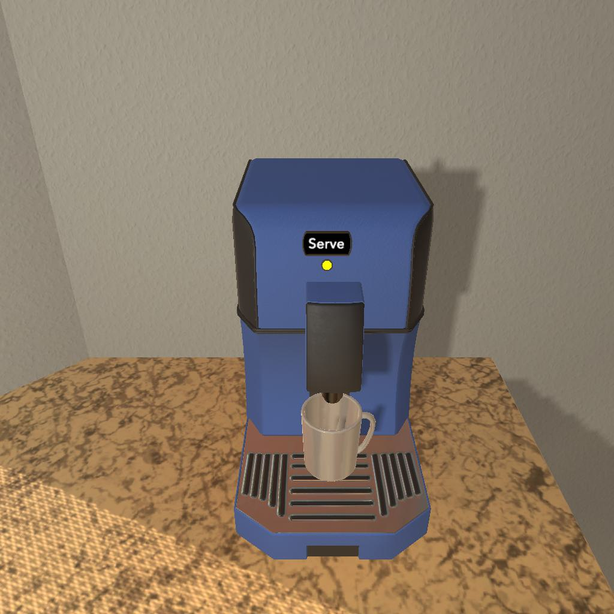

---------------------------------------------------------task: 23---------------------------------------------------------
--------------------------------------------------------------------------------------------------------------------------------------------------------------------
--------------------------------------------------------------------------------------------------------------------------------------------------------------------
Step:--------------------------------------------------------------------------8-------------------------------------------------------------------------------
----------------------------------------
VLM Prompt:
Image1:
**Instruction**
1. Analyze the provided image to identify all visible household objects, focusing on those relevant to the task description "put a hot mug in coffeemachine."
2. Use the analysis of the image and the task hint "The agent must find an object of the desired type, pick it up, go to a microwave, heat the object with the microwave, then find the correct location to place it, and put it down there. The agent does not need to use the microwave button or open the microwave to heat the object, and the agent just needs to do action that is "heat the object with the microwave"." to answer the question: what is the most reasonable action in the choices for the task description "put a hot mug in coffeemachine"?
4. Decide and write the answer using the template: The answer is: (i): , where i is the real number. If there is no desired object in the image, search every place based on **Initial Observation** to find the object. And if no one is exactly correct, choose a similar answer.
**Initial Observation**
You are in the middle of a room. Looking quickly around you, you can see cabinet (1-15), fridge (1), countertop (1-4), drawer (1-4), microwave (1), toaster (1), coffeemachine (1), garbagecan (1), sink (1), stoveburner (1-3), sinkbasin (1)
**Answer Choices**
(1): go to cabinet 1
(2): go to cabinet 2
(3): go to cabinet 3
(4): go to fridge 1
(5): go to countertop 1
(6): go to cabinet 4
(7): go to cabinet 5
(8): go to cabinet 6
(9): go to cabinet 7
(10): go to drawer 1
(11): go to drawer 2
(12): go to cabinet 8
(13): go to drawer 3
(14): go to cabinet 9
(15): go to cabinet 10
(16): go to drawer 4
(17): go to microwave 1
(18): go to cabinet 11
(19): go to toaster 1
(20): go to cabinet 12
(21): go to cabinet 13
(22): go to cabinet 14
(23): go to cabinet 15
(24): go to countertop 2
(25): go to garbagecan 1
(26): go to countertop 3
(27): go to countertop 4
(28): go to sink 1
(29): go to stoveburner 1
(30): go to stoveburner 2
(31): go to stoveburner 3
(32): go to sinkbasin 1
(33): examine coffeemachine 1
**Answer**
Let's think step by step by following the instructions.
----------------------------------------
----------------------------------------
Original Response:
The task is to "put a hot mug in coffeemachine." From the image provided, we can see a coffeemachine (1) with a mug already in place. Since the task requires the mug to be hot, the agent must heat the mug. According to the task hint, the agent doesn't need to use the microwave button or open the microwave to heat the object; the agent just needs to perform an action that is "heat the object with the microwave."
In the image, we do not see a microwave, but based on the **Initial Observation**, we know there is a microwave (1) in the room. Therefore, the most reasonable action for the agent to perform the task would be to go to the microwave to heat the mug, and then put it in the coffeemachine.
The answer is: (17): go to microwave 1.
----------------------------------------
----------------------------------------
>>> Refine Original VLM Response and Get Pure Action: go to microwave 1
----------------------------------------
-----------------------------------------------------------------
Running time: 12.38849687576294 seconds
Total Money: 8.151530000000001
-----------------------------------------------------------------
-----------------------------------------------------------------
Text Observation:You arrive at loc 16. The microwave 1 is closed.
-----------------------------------------------------------------
UNSUCCEED